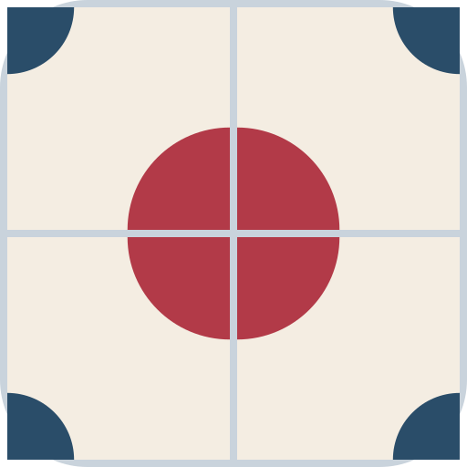

Tesela
Cada día, Tesela esconde una cita de la literatura en español. Resuelve las definiciones: cada letra lleva un número y pasa a la casilla con ese número de la rejilla. También puedes escribir directamente en la rejilla, y la letra viajará a su definición. La frase te ayuda con las definiciones difíciles, y las definiciones te ayudan con la frase.
Las iniciales de las respuestas, leídas en orden, forman una palabra oculta. Tiene su propia definición.
Puedes comprobar tus letras o revelar alguna cuando te atasques. Cuantas menos ayudas uses, mejor.
La racha cuenta los días seguidos en que resuelves la partida de ese mismo día.
Las partidas anteriores se pueden jugar, pero no cuentan para la racha.